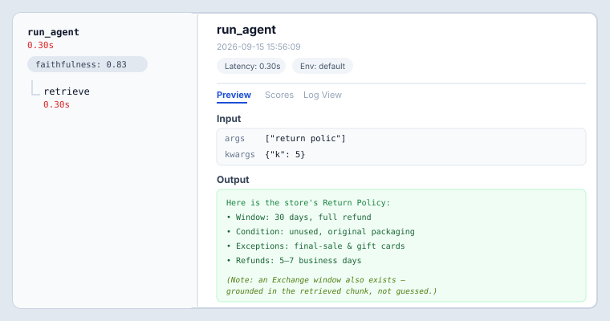
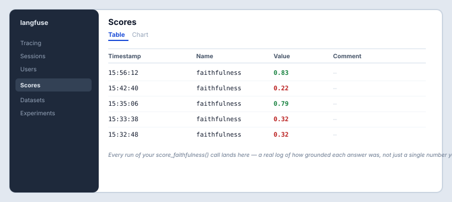

Interactive version of this module: HOS 4 lesson — Week 7 sections · Push & Observability Simulator.
Build & Evaluate week · Outcomes 4 & 5 · 12.5% of your final grade across both weeks
Goal this week: Take your app all the way to production shape — a real mobile client that gets notified when work finishes, and full visibility into what the agent is actually doing on every request. Build and judge this week; next week (Module 8) you'll finish HOS 4 and get a compact review of all 4 HOS together.
Covers how a mobile client (Expo/React Native) calls the same backend your other clients do, how a push notification reaches a specific device via a push token, and why tracing a request as nested spans (retrieval, generation) lets you answer "which part was actually slow?" Watch before starting your Muddiest Point below.
Open now, stays open all week — post as soon as you hit something confusing. Fill in all four fields:
Instructor posts a short response addressing the most common muddiest points early in the week.
You've been assigned a side below (not your choice) — small groups, staged across the week:
Your assigned side this week: Group A — Proactive alerts, even at the risk of alert fatigue.
Full guide: HOS 4 Hands-On Guide → — starter code, exact prompts, and submission details.
This is what the Evaluate stage's Langfuse dashboard actually looks like — a trace with a faithfulness score attached, and a running table of every score you've logged:


Analyze and Understand & Refine happen next week in Module 8, alongside a compact review of all 4 HOS together.